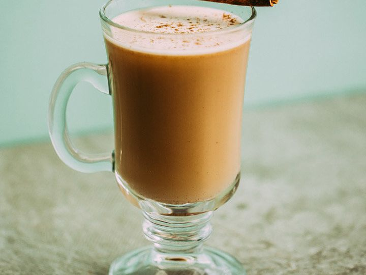

Hot Buttered Rum

Description
A boozy winter drink to warm you up after a day out in the cold!
Made with rum, hot water, and butter mixed with a selection of winter-themed spices.
Ingredients
Batter
- 1/2 cup unsalted butter, room temp
- 1/2 cup firmly packed dark brown sugar
- 1/2 tsp ground cinnamon
- 1/4 tsp ground nutmeg
- 1/4 tsp pure vanilla extra
- 1/8 tsp ground ginger
- 1 pinch ground cloves
- 1 pinch salt
For Drinks
- 3 tbsp rum of choice
- 1 tbsp cream
- Boiling water as need
- 1/8 tsp ground nutmeg or to taste
Steps
- In a mixing bowl, combine all batter ingredients and mix until well combined. Can be used immediately or rolled into a log and refrigerated for later use.
- In a festive, heat proof mug, combine rum, cream, and 2 tbsp batter. Fill halfway with boiling water and stir until batter is dissolved. Top off with more water and garnish with nutmeg.
- Enjoy!